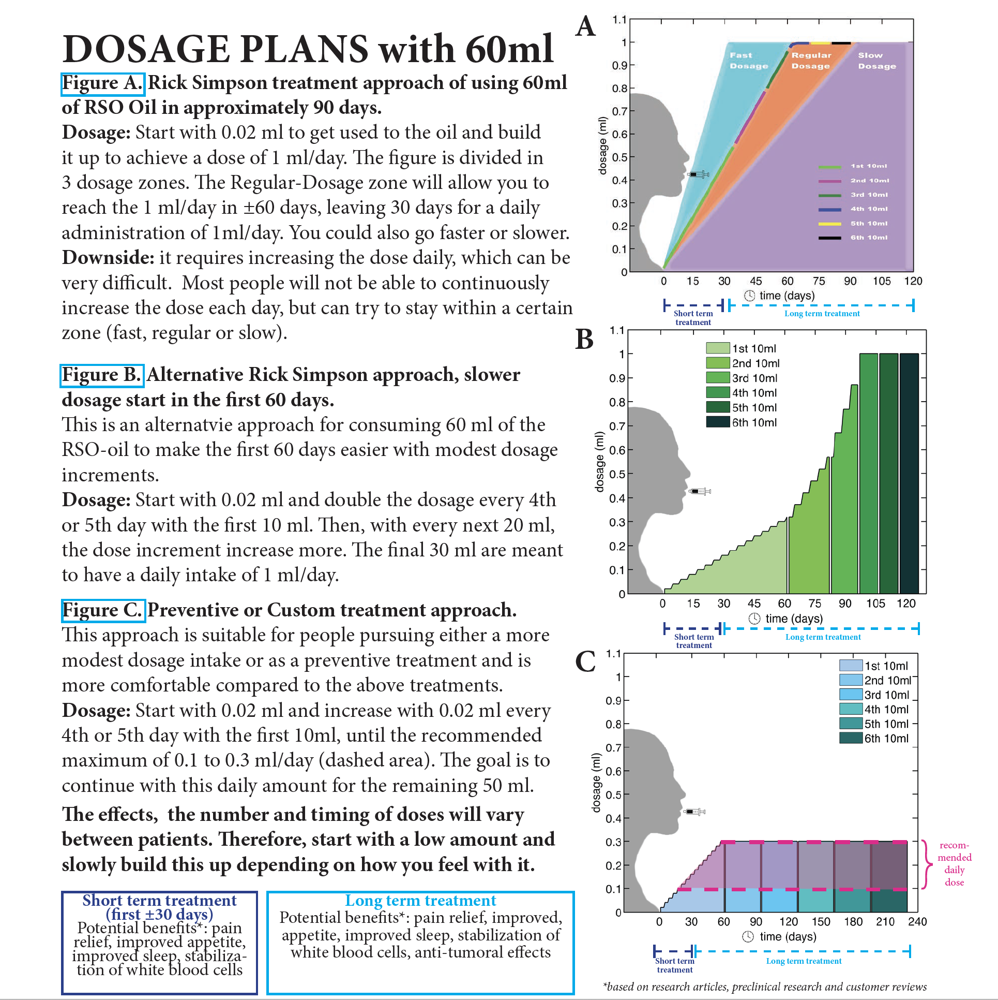
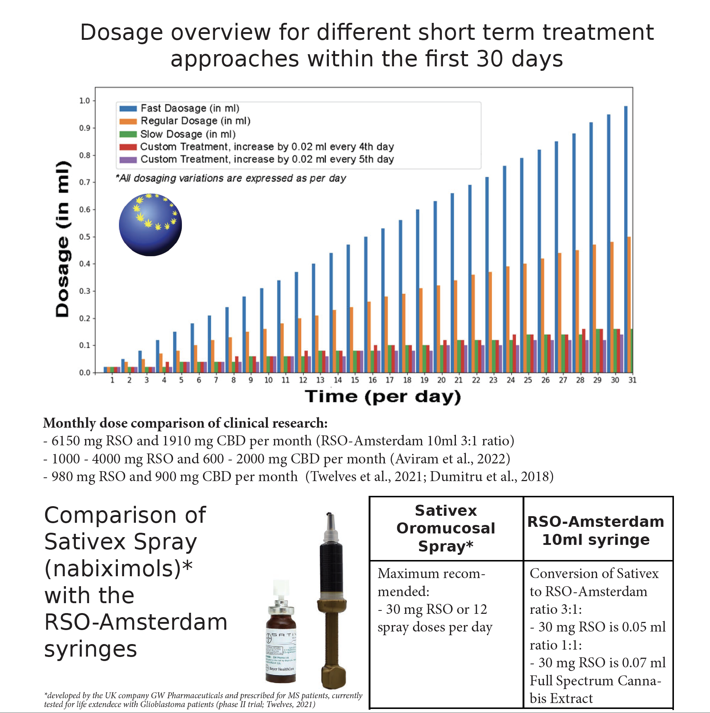
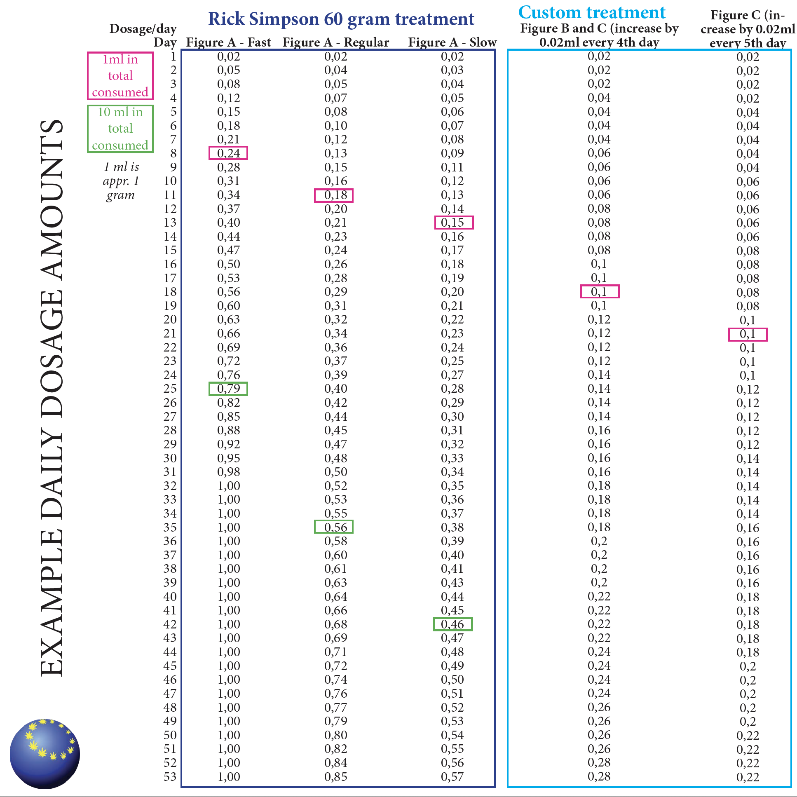
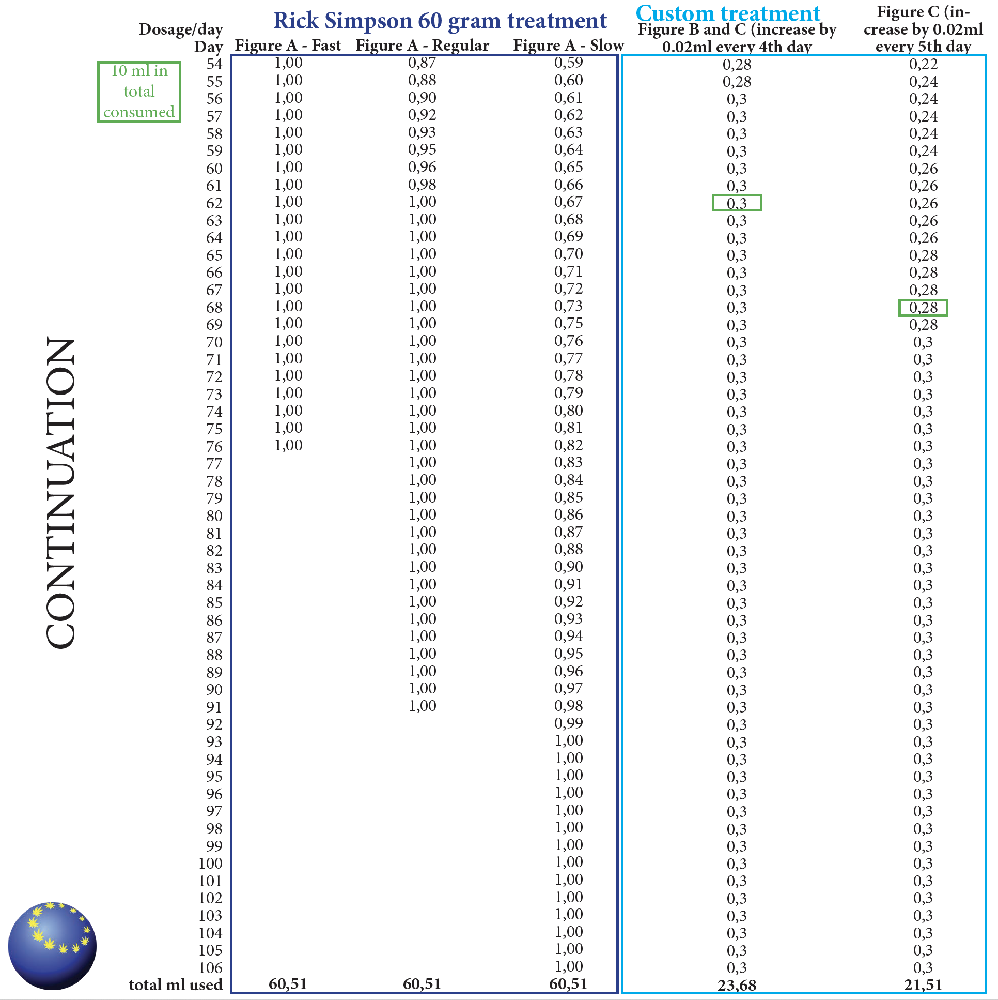
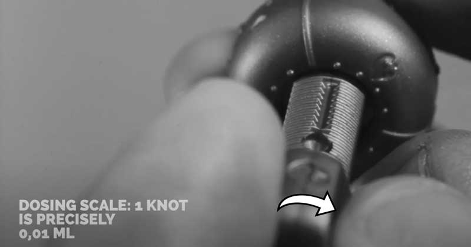
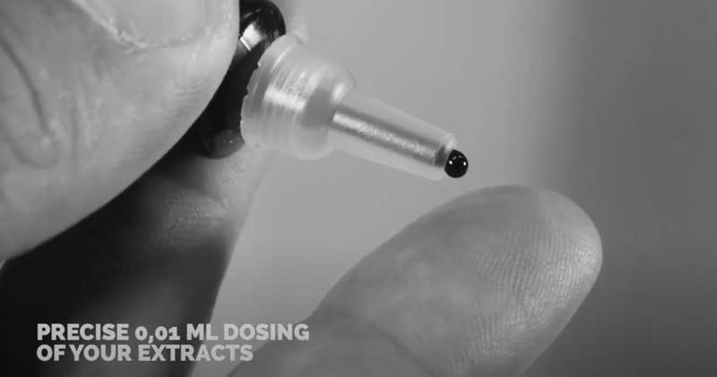

THC is very effective against pain, but in the right amount. A lot of research done in the lab and with animals shows positive long term effects. The hypothesis is that the more cannabinoids your body takes, the better the results. However, the recommended dosage with RSO products is to start with a low amount and gradually increase the daily dosage, until the most desired results are reached. This allows your body to build up tolerance against possible side effects and simultaneously make use of the benefits of cannabinoids. CBD can mitigate the side-effects of THC thus some patients prefer an equal amount of THC and CBD.
We recommend personalising your dosage for each product (since the effect will be different for every person). Start with a low amount and gradually increase the dose until the most desired results are reached. This way you can easily drop back to a previous lower amount if needed.
Allow the oil to come to room temperature before administering. Place the syringes in a warm water bath if you have difficulty with extracting the oil (do not place it in a microwave).
As a dietary supplement, use once or twice daily. The oil can be ingested orally, by placing the oil under your tongue for a couple of minutes. Start in the first week with a small amount of 0.02 ml. In the second week you could try to slowly build up and increase the amount and place it under the tongue, where you need to hold it for ±60 seconds before swallowing, in order to uptake as much as possible in your bloodstream.
Rick Simpson made the treatment of cannabis for cancer popular by using 60 gram or 60 ml in 90 days. Figure A gives an example of a Faster and Slower approach on this popular treatment.
In addition, figure B und C allows for a more personal treatment approach, that is more comfortable.
     The RSO-oil has an onset of action of approximately 0.5 to 1 hours and peak effect at 2 to 4 hours. Also around half of the daily intake can best be done before sleeping. Duration of action for psychoactive effects is 4 to 6 hours, but the appetite stimulant effect may continue for 24 hours or longer after administration. Feeling drowsy, tired and sleepy is a normal reaction. Sleeping 8 to 10 hours a day is also normal. If you do not feel well after intake (nausea or dizziness), then you could take a glass of water with honey or anything sweet. This will help to recover faster from nausea or dizziness induced by the sudden lower blood pressure after oil intake. Still, if this does not help sufficiently then the best thing to do is to take a lower dose for a couple of days before increasing again.
Other forms of administration are:
Allow the oil to come to room temperature before administering. Place the syringes in a warm water bath if you have difficulty with extracting the oil (do not place it in a microwave).
We recommend personalising your dosage (since the effect will be different for every person),
by starting with a low amount (1 to 5 drops per day) and gradually increase a dose until the most desired results are reached (with a maximum of 15 drops per day).
Our products can be taken sublingual, vaped and you can also mix it with food or lubricate it on the skin. This way you can also drop back to a previous lower amount if needed.
As a dietary supplement, use once or twice daily. The oil can be ingested orally,
by placing a few drops under your tongue for a couple of minutes.
Start in the first week with a small amount of a few drops per day.
Other forms of administration are:
Receive more information or make an appointment
Contact us nowOr have a look at our FAQ page